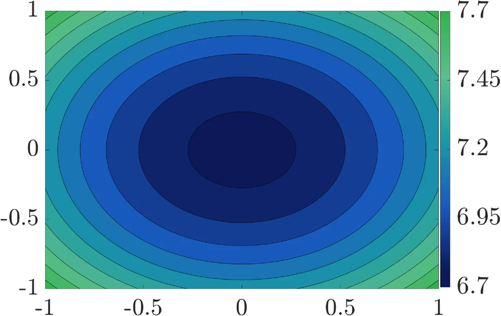
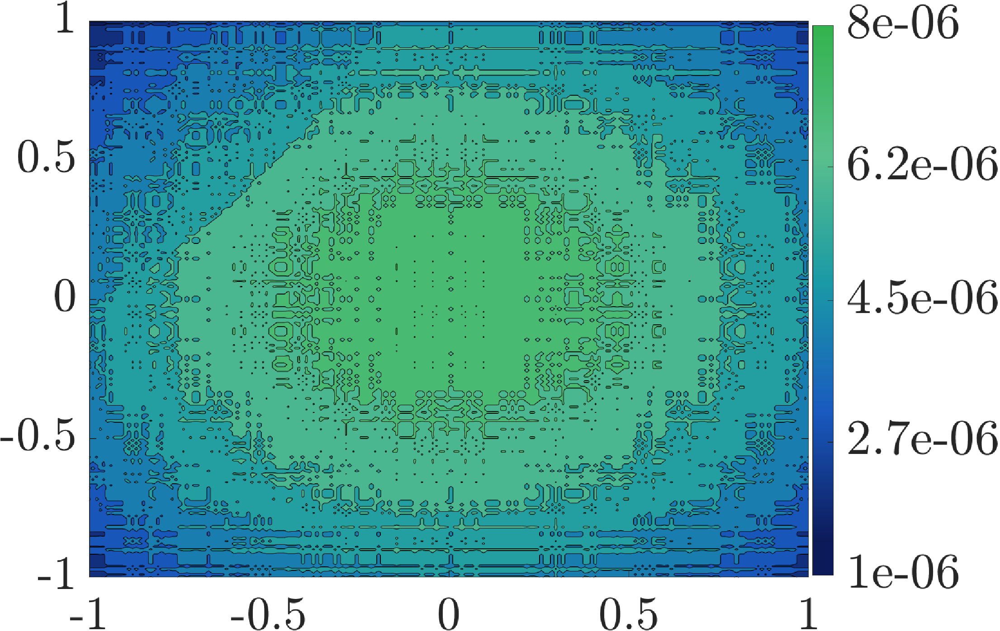

Big equations can swallow entire computers. FEX plus TranNet gives them a new kind of solver that returns compact mathematical expressions directly.
High dimensional PDEs power the science behind diffusion, fluids, finance, and simulation. Most solvers grind through grids or hide answers inside black boxes. This work flips the script. It sends AI into formula space and asks it to come back with an expression.
FEX is the search engine. TranNet is the learned operator library. Together they build a mathematical toolkit that can discover the shape of a solution, even when the obvious building block is missing.
The method assembles a solution from learned operators. The pool includes learned versions of familiar moves like squares, cubes, exponentials, sine, and cosine. FEX tests combinations, chooses the useful pieces, then tunes the formula until the equation gives way.
The first heatmap shows a clean solution slice from a giant Poisson problem. The second shows what is left after the formula hunt. The takeaway lands instantly: a monster equation shrinks into a readable pattern, with only a faint ghost of error behind it.
That is the clickworthy idea. AI hunts for structure. For scientists, this points toward solvers that return both results and insight. For AI, it hints at a future where neural networks help write formulas.